A Gentle Farewell for Your Cherished Companion
We provide peaceful, dignified cremation services and handcrafted remembrance keepsakes. With utmost tenderness and respect, our devoted team walks beside you through every step of this journey.
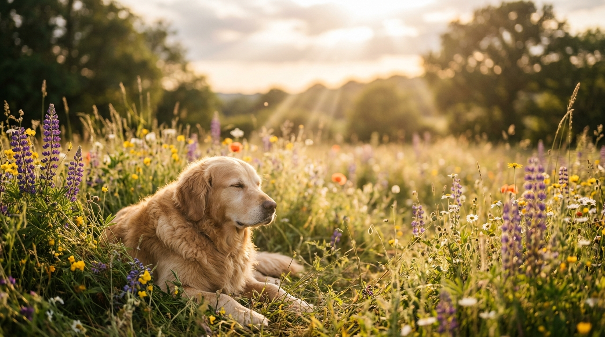
Compassionate Care in Every Detail
We treat every beloved animal companion with the tender dignity, absolute transparency, and loving kindness they deserve.
Gentle Care
From our gentle transfer from your home or vet clinic to the final embrace, your pet is cradled in soft blankets with absolute serenity.
Private & Communal
Choose dedicated individual private cremation with guaranteed ashes return or communal scattering in our peaceful sanctuary garden.
Personal Memorials
Cherish eternal memories with custom engraved cedar urns, impression clay paw prints, nose print pendants, and memorial lockets.
Trusted Support
Our certified pet bereavement counselors are standing by 24 hours a day to offer a compassionate ear, guidance, and peaceful support.
Our Services
Personalized aftercare solutions created to bring peace of mind, closure, and lasting comfort to your entire family.
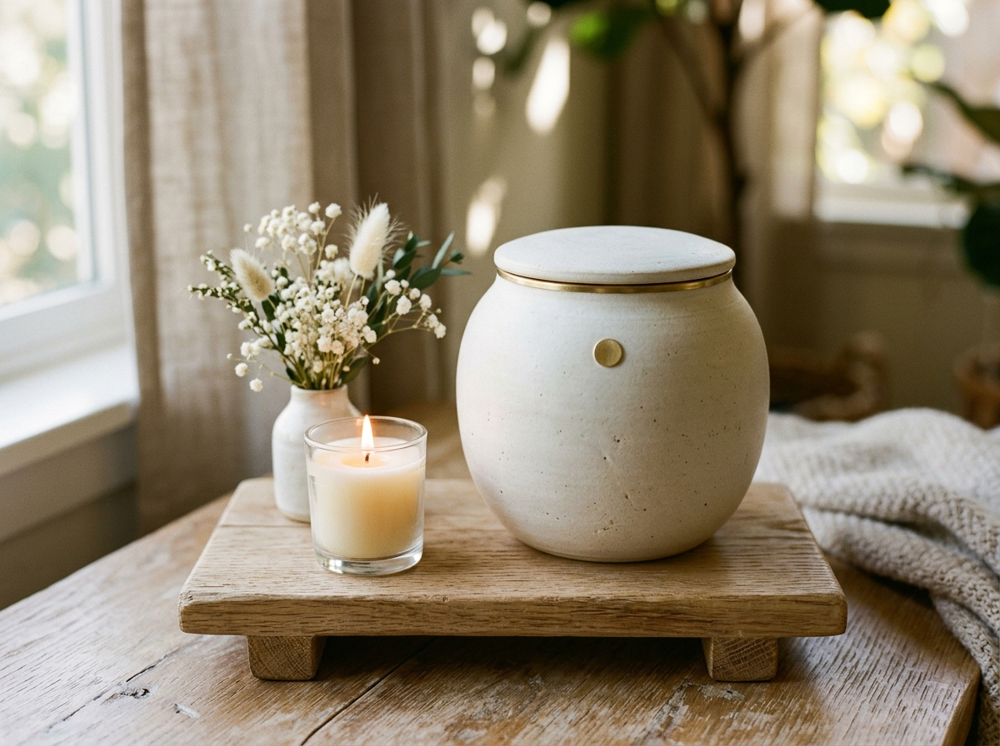
Individual CarePrivate Cremation
Your companion is placed in their own private cremation chamber. We guarantee 100% of your pet's ashes returned in your chosen urn.
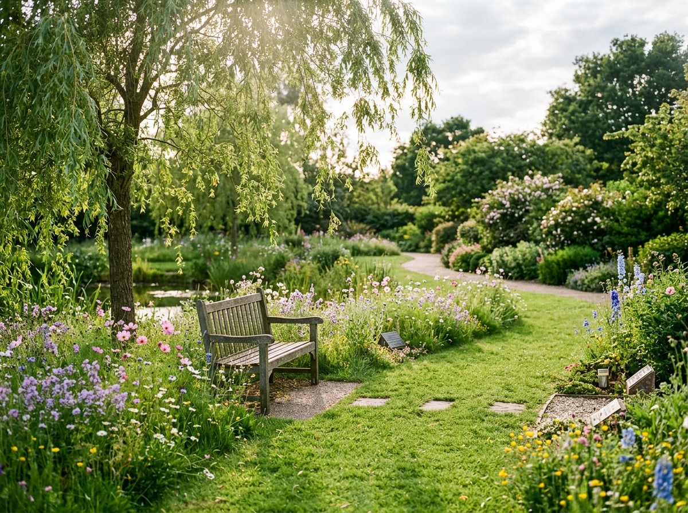
SanctuaryCommunal Cremation
Your pet is cremated alongside other cherished pets and scattered with love in our peaceful country wildflower sanctuary garden.
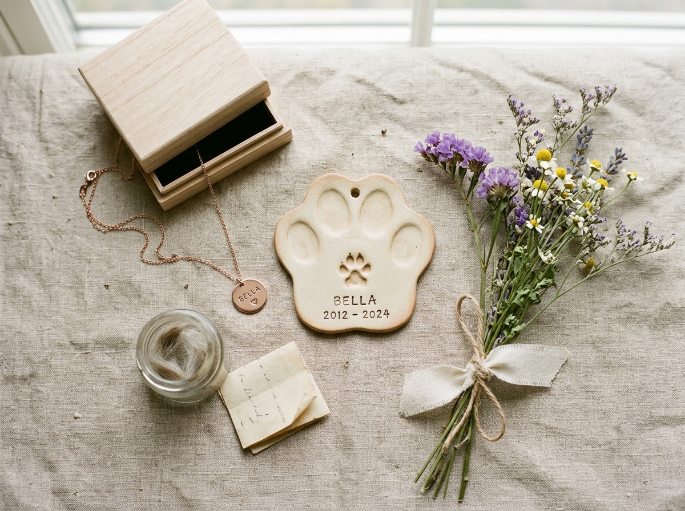
RemembranceMemorial Keepsakes
Keep their spirit close with custom clay paw impressions, engraved silver pendants, glass touchstones, and fur lockets.
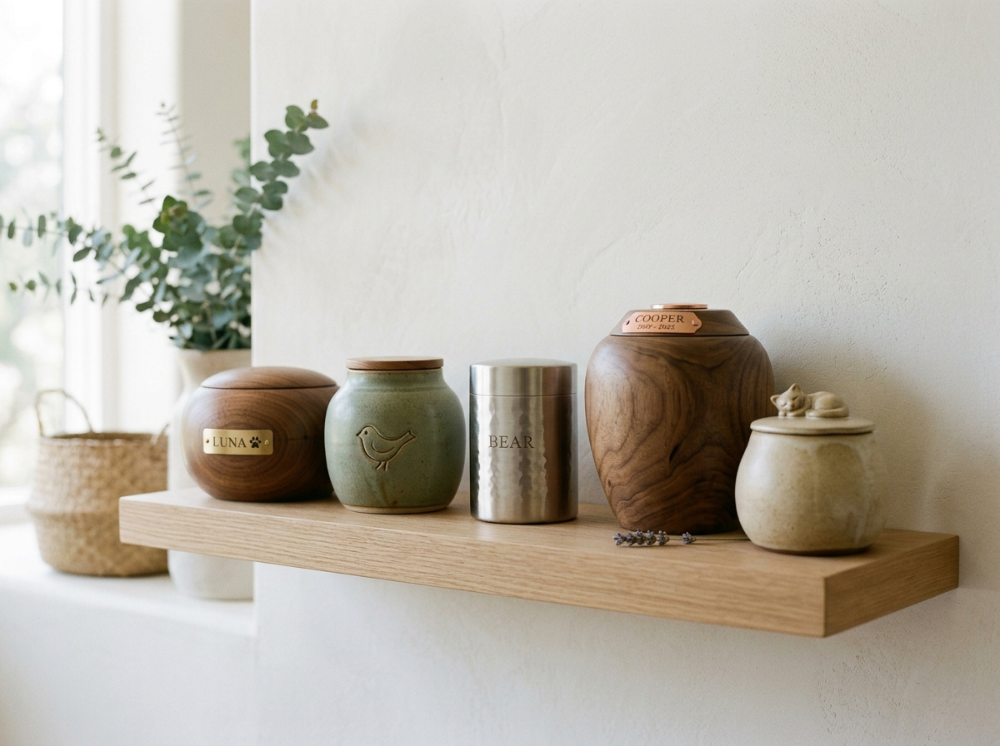
Artisan CraftUrn Selection
Explore our curated gallery of handcrafted walnut, natural marble, rustic ceramic, and biodegradable scattering pet urns.
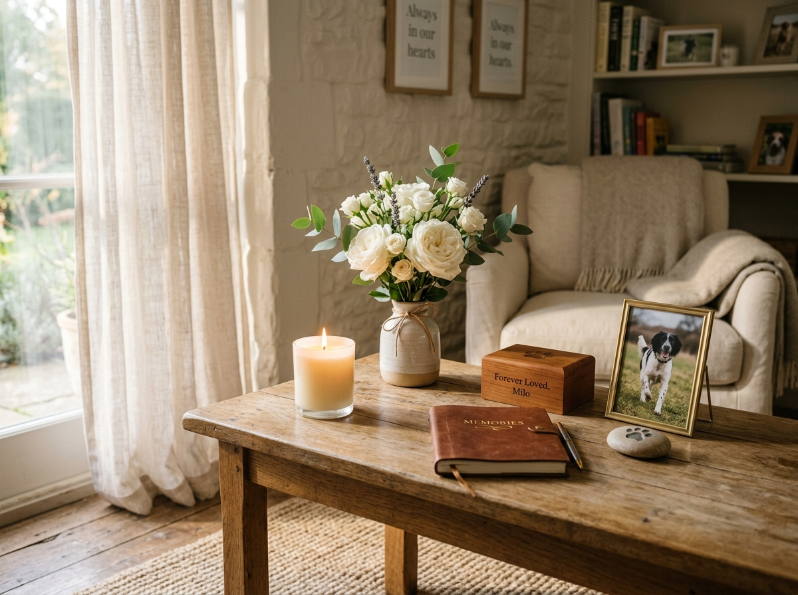
"They gave our sweet Milo such dignity and brought us peace during our darkest hour."
Honoring Every Pet With Dignity, Grace & Complete Transparency
Your pet gave you years of unconditional loyalty, joyous tail wags, and comfort. When the time comes to say goodbye, we uphold an unbreakable standard of honor and gentle reverence.
Strict Identification Tracking (PawsTrack™)
Each pet is assigned a unique stainless-steel identification disc that accompanies them throughout the entire process.
Private Family Farewell Viewing Room
A calm, soothing sanctuary where you can spend peaceful final moments saying goodbye without feeling rushed.
Gentle Home & Clinic Transfer Service
Our caring team arrives in comfortable, unmarked vehicles with soft linen baskets to bring your companion into our care.
Memorial Keepsakes
Tangible, heartwarming tokens to hold your pet's presence close to your heart forever.
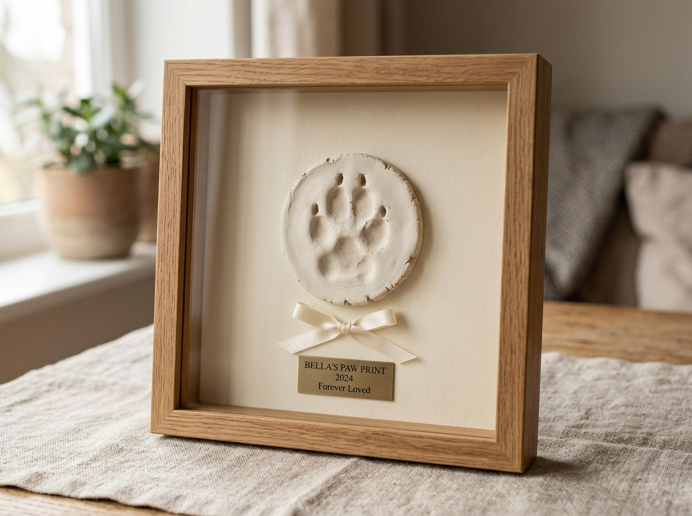
Clay CastPaw Print Keepsake
A delicate 3D clay or ink impression of your pet's paw, mounted in a natural oak shadow frame with an engraved brass plaque.
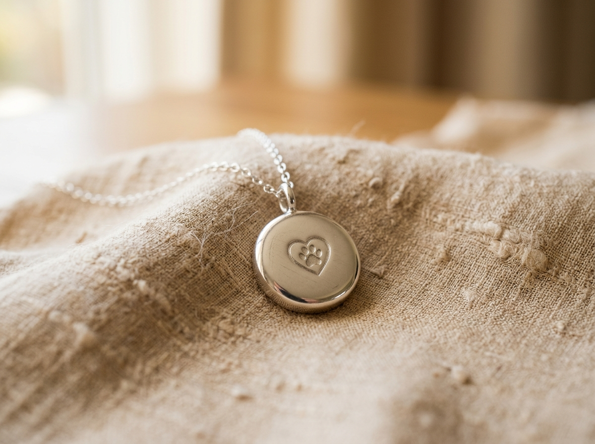
Sterling SilverMemorial Jewelry
Hand-polished sterling silver and 14k gold urn pendants designed to safely hold a pinch of ashes or a delicate lock of fur.
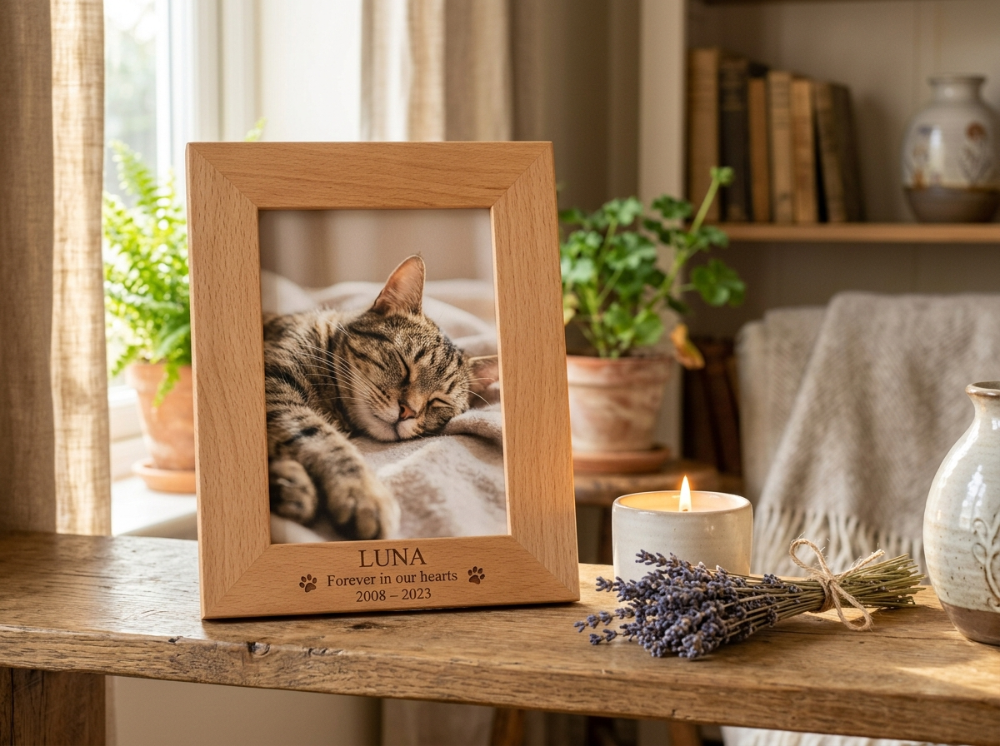
Custom WoodPhoto Memorial Frame
Solid beech wood frame laser-carved with your pet's name and dates, featuring an integrated compartment for keepsakes.
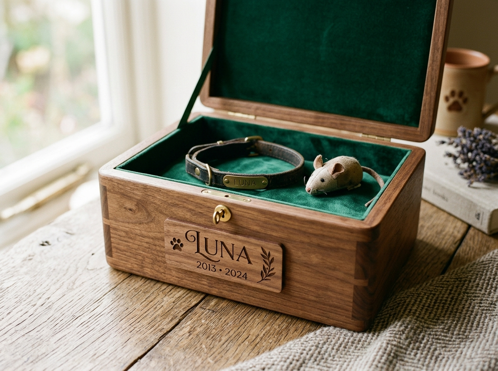
Handmade BoxPersonalized Keepsake Box
Handcrafted walnut memory chest lined with emerald velvet to safeguard their favorite collar, tags, toys, and certificates.
How It Works
A simple, transparent, and compassionate process designed to relieve your stress during an emotional time.
Contact Us
Reach our compassionate care team anytime day or night. We arrange immediate, gentle transportation from your residence or clinic.
We Care For Your Pet
Your pet is welcomed into our climate-controlled peaceful facility, assigned an individual tracking ID, and tucked in with soft blankets.
Choose Memorial Options
Select between private or communal cremation, personalized urns, paw print impressions, and custom memorial keepsakes.
Receive Their Memorial
Your pet's ashes and commemorative keepsakes are carefully delivered to your home or made available for private pickup in our comfort room.
Tribute Wall Preview
A sacred space celebrating the lives, smiles, and unbreakable bonds of the wonderful pets who left paw prints on our souls.
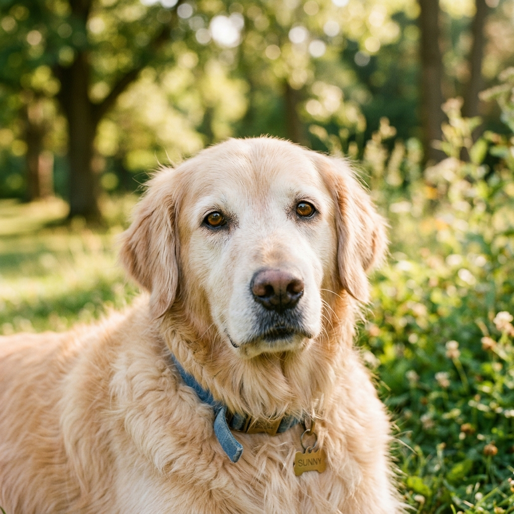
"Forever running in sunny clover meadows. You brought 12 years of pure sunshine, gentle hugs, and endless joy to our home. We miss your morning tail wags so deeply."
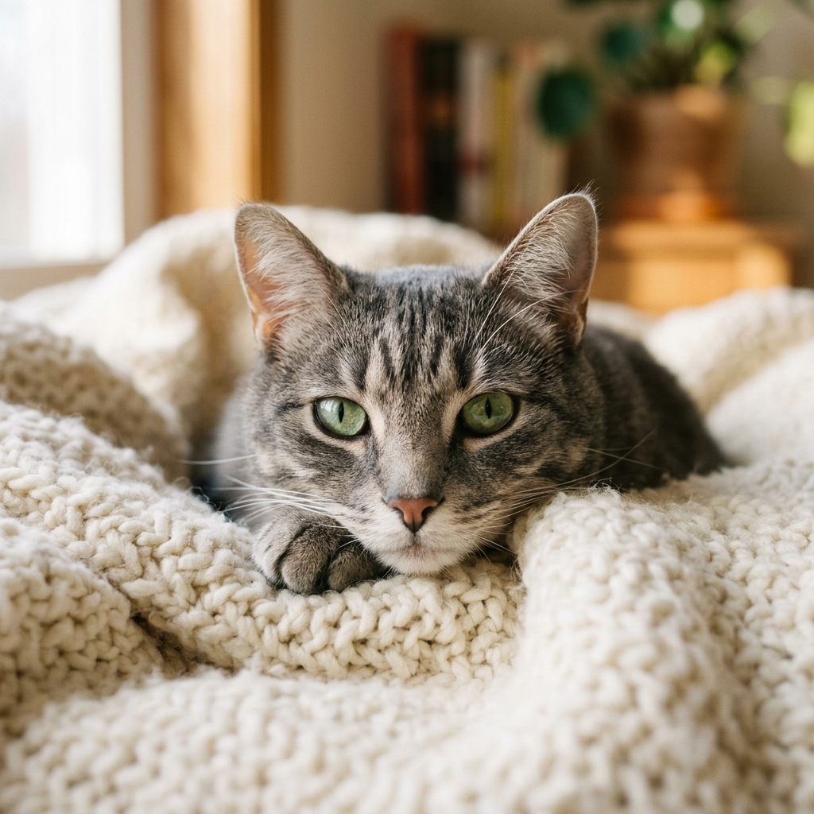
"Our sweet little shadow and quiet guardian. Your gentle purrs healed our hearts on hard days. Sleep peacefully on your cozy blanket in the stars, sweet girl."
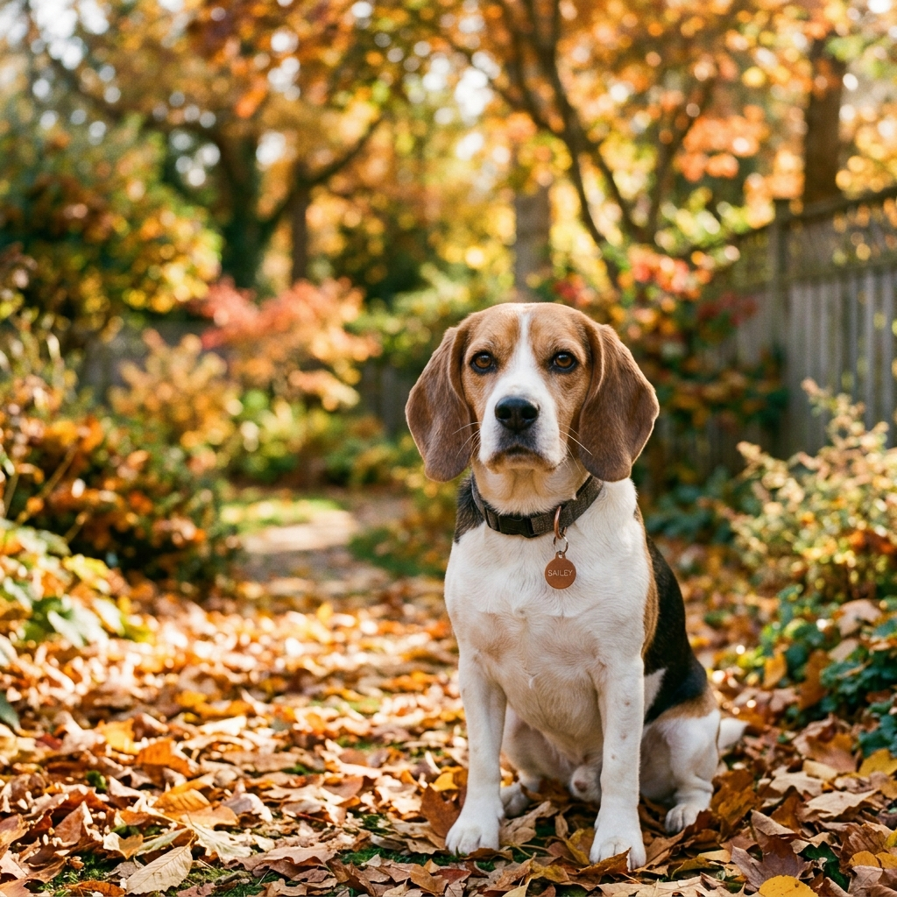
"The sweetest boy with the biggest heart and the floppy ears we loved kissing. Thank you for walking every trail beside us. You will never be forgotten."
Gentle Guidance When You Need It Most
Whether you are planning ahead or need immediate assistance, our compassionate counselors are ready to answer your questions and help you honor your companion with dignity.
24/7 Care Hotline
(800) 555-PAWSImmediate response for pet transfers, emergency guidance, and gentle pre-planning consultations.